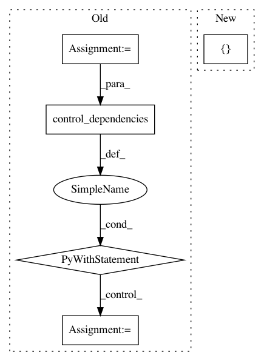

b08a142edf180325b63441ec1b71119c393c4a64,tf_agents/metrics/tf_metrics_test.py,TFMetricsTest,testMetric,#TFMetricsTest#Any#Any#Any#Any#,149
Before Change
for i in range(num_trajectories):
with tf.control_dependencies(deps):
traj = metric(trajectories[i])
deps = tf.nest.flatten(traj)
with tf.control_dependencies(deps):
result = metric.result()
result_ = self.evaluate(result)
self.assertEqual(result_, expected_result)
self.evaluate(metric.reset())
self.assertEqual(0.0, self.evaluate(metric.result()))
After Change
expected_result):
with run_mode():
trajectories = self._create_trajectories()
if metric_class in [tf_metrics.AverageReturnMetric,
tf_metrics.AverageEpisodeLengthMetric]:
metric = metric_class(batch_size=2)
else:
metric = metric_class()
In pattern: SUPERPATTERN
Frequency: 3
Non-data size: 5
Instances
Project Name: tensorflow/agents
Commit Name: b08a142edf180325b63441ec1b71119c393c4a64
Time: 2019-07-25
Author: oars@google.com
File Name: tf_agents/metrics/tf_metrics_test.py
Class Name: TFMetricsTest
Method Name: testMetric
Project Name: HyperGAN/HyperGAN
Commit Name: 1e339c1a0a186da155c9dc2ab8798075d248dc3e
Time: 2018-11-06
Author: mikkel@255bits.com
File Name: hypergan/optimizers/curl_optimizer.py
Class Name: CurlOptimizer
Method Name: apply_gradients
Project Name: tensorflow/transform
Commit Name: d7a7dd6fe7106f6501e9995a92153f65238bbb47
Time: 2019-06-21
Author: tf-transform-dev@google.com
File Name: tensorflow_transform/analyzers.py
Class Name: QuantilesCombiner
Method Name: _make_get_buckets_callable